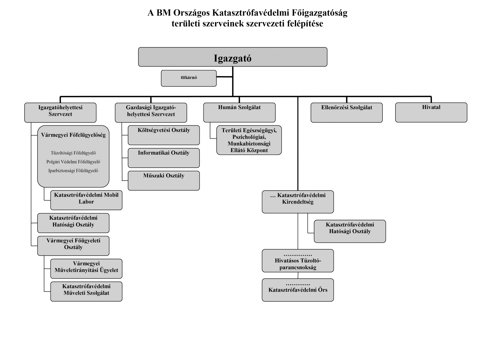

Szervezeti Felépítés
Az Országos Katasztrófavédelmi Főigazgatóság hierarchikus felépítésű rendvédelmi szerv. A fegyelem és a pontos szolgálati út betartása minden tagunk számára kötelező.
Főigazgatóság (Vezetőség)
Hivatalos Szervezeti Felépítés

Speciális Alosztályok
KMSZ - Katasztrófavédelmi Műveleti Szolgálat
A legmagasabb szintű káresetek irányításáért felelős egység. Tagjai kiemelt riasztási fokozatoknál vonulnak, és átveszik a kárhelyszín parancsnoki feladatait.
KML - Katasztrófavédelmi Mobil Labor
Veszélyes anyagok jelenlétével járó baleseteknél, környezeti katasztrófáknál végzendő felderítésre, mintavételre és mérésekre specializálódott egység.
Hatósági Osztály
A tűzvédelmi engedélyek kiadásáért, az épületek és telephelyek ellenőrzéséért, valamint a tűzvizsgálatok lefolytatásáért felelős részleg.
Funkcionális Osztályok és Ügyeletek
Vármegyei Főügyeleti Osztály
A vármegyei szintű szakmai felügyeletért, a készenléti egységek munkájának összehangolásáért és a szervezeti adminisztrációért felelős törzsegység.
Vármegyei Műveletirányítási Ügyelet
A segélyhívások fogadását, a riasztások kiadását és a vonuló egységek folyamatos rádiós, valamint koordinációs támogatását végző központ.
Informatikai Osztály
A szervezet belső hálózatainak, rádiórendszereinek (EDR), valamint a számítástechnikai és adatbázis-kezelő eszközök karbantartásáért felelős részleg.
Műszaki Osztály
A gépjárműfecskendők, különleges szerek és szakfelszerelések folyamatos üzemképességéért, szervizeléséért és logisztikájáért felelős osztály.
Költségvetési Osztály
A frakció gazdasági ügyeiért, a felszerelések beszerzéséért, a pénzügyi tervezésért és a tagok illetményeinek adminisztrációjáért felelős háttérosztály.
Rendfokozatok és Állományi kategóriák
| Besorolás | Rendfokozatok | Szolgálati feladat |
|---|---|---|
| Tábornokok |
 Altábornagy Altábornagy Vezérőrnagy Vezérőrnagy Dandártábornok Dandártábornok |
A frakció legmagasabb szintű stratégiai vezetése, globális döntéshozatal és főigazgatói feladatok. |
| Főtisztek |
 Ezredes Ezredes Alezredes Alezredes Őrnagy Őrnagy |
Osztályok és főosztályok vezetése, operatív tervezés, valamint a TGF és panaszok bírálata. |
| Tisztek |
 Százados Százados Főhadnagy Főhadnagy Hadnagy Hadnagy |
Alosztályok vezetése, szolgálati csoportok közvetlen felügyelete és kárhelyszíni parancsnoki feladatok. |
| Zászlósok |
 Főtörzszászlós Főtörzszászlós Törzszászlós Törzszászlós Zászlós Zászlós |
Kiemelt helyszíni feladatok végrehajtása, gépjárműfecskendő-parancsnoki beosztások. |
| Tiszthelyettesek |
 Főtörzsőrmester Főtörzsőrmester Törzsőrmester Törzsőrmester Őrmester Őrmester |
Önálló beosztott tűzoltók, gépjárművezetők, a vonulós állomány gerince. |